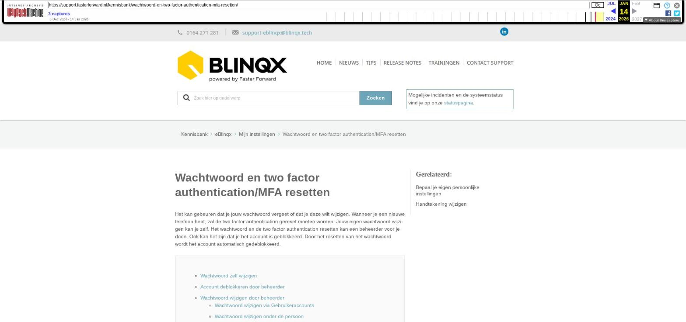

Wachtwoord en two factor authentication/MFA resetten

Tekstinhoud
Wachtwoord en two factor authentication/MFA resetten
Het kan gebeuren dat je jouw wachtwoord vergeet of dat je deze wilt wijzigen. Wanneer je een nieuwe telefoon hebt, zal de two factor authentication gereset moeten worden. Jouw eigen wachtwoord wijzigen kan je zelf. Het wachtwoord en de two factor authentication resetten kan een beheerder voor je doen. Ook kan het zijn dat je het account is geblokkeerd. Door het resetten van het wachtwoord wordt het account automatisch gedeblokkeerd.
Wachtwoord zelf wijzigen
Account deblokkeren door beheerder
Wachtwoord wijzigen door beheerder
Wachtwoord wijzigen via Gebruikeraccounts
Wachtwoord wijzigen onder de persoon
Two factor authentication/MFA resetten
Wachtwoord zelf wijzigen
Om je eigen wachtwoord te wijzigen, ga je naar 'Mijn instellingen' via het poppetje rechts bovenin. Hier kan je klikken op 'Wachtwoord wijzigen'. Je moet eerst je oude wachtwoord invoeren. Vervolgens kun je een veilig wachtwoord laten genereren door eBlinqx. Zo heb je een wachtwoord dat vrijwel niet te raden valt. Het wachtwoord zelf wijzigen is alleen mogelijk als je het oude wachtwoord nog weet. Weet je deze niet meer dan zal de beheerder een nieuw wachtwoord moeten genereren (zie hieronder).
Account deblokkeren door beheerder
Het kan gebeuren dat jouw account is geblokkeerd, omdat je meerdere malen het verkeerde wachtwoord of de code van two factor foutief hebt ingevoerd. Voor de beheerder is het mogelijk om jouw account te deblokkeren zonder hierbij het wachtwoord te wijzigen. Dit is mogelijk via Beheer – Gebruikersaccounts. Hier zoek je het betreffende gebruikersaccount op. Hierachter staat een sleutel. Indien de sleutel rood is dan is het account geblokkeerd. Door op de rode sleutel te klikken deblokkeer je het account. De sleutel wordt geel.
Wachtwoord wijzigen door beheerder
Het wijzigen van het wachtwoord kan op twee verschillende plaatsen in eBlinqx, namelijk onder de persoon of via de module Gebruikeraccounts – tabblad Overzicht. Let op: je dient hier wel de juiste rechten voor te hebben en alleen beheerders mogen gebruik maken van deze rechten.
Wachtwoord wijzigen via Gebruikeraccounts
Ga om het wachtwoord te wijzigen naar Beheer – Gebruikeraccounts. Achter de gebruiker zie je een sleutel staan.
Door op deze sleutel te klikken, krijg je een pop-up scherm waarin je je het wachtwoord kan wijzigen door te klikken op 'Genereer veilig wachtwoord'.
Je kan dan een SMS sturen naar de gebruiker met daarin het nieuwe wachtwoord. Dat is veiliger doordat je een andere communicatiekanaal gebruikt (naast eBlinqx). Dit doet je door 'verstuur sms naar gebruiker' aan te vinken, het mobiele nummer in te vullen en vervolgens te kiezen voor 'Wijzig wachtwoord' De gebruiker wordt na inloggen direct gevraagd om een nieuw wachtwoord aan te maken.
Bij het resetten van het wachtwoord wordt het account automatisch gedeblokkeerd mocht deze geblokkeerd zijn en de toegang geweigerd worden.
Wachtwoord wijzigen onder de persoon
Het wachtwoord wijzigen onder de persoon kan de beheerder als volgt doen:
Ga naar 'Beheer – Organisatie & personen'
Zoek jouw collega via personen op en klik op het tabblad Login- en systeeminstellingen. Let op: soms staat een collega dubbel in eBlinqx. Je dient de persoon te kiezen waaronder het gebruikersaccount staat ingesteld. Dit is te zien onder het tabblad Login- en systeeminstellingen.
Klik op Genereer veilig wachtwoord
Je kan dan een SMS sturen naar de gebruiker met daarin het nieuwe wachtwoord. Dat is veiliger doordat je een andere communicatiekanaal gebruikt (naast eBlinqx). Dit doet je door 'verstuur sms naar gebruiker' aan te vinken, het mobiele nummer in te vullen en vervolgens te kiezen voor 'Wijzig wachtwoord' De gebruiker wordt na inloggen direct gevraagd om een nieuw wachtwoord aan te maken.
Stel dat het account geblokkeerd is, omdat de gebruiker meerdere keren het wachtwoord of verificatiecode verkeerd heeft ingevuld, dan wordt deze automatisch gedeblokkeerd bij het wijzigen van het wachtwoord.
Two factor authentication/MFA resetten
Onder Beheer – Gebruikeraccounts – tabblad Overzicht is het ook mogelijk om de two factor authentication/MFA te resetten. Dit via het telefoonicoontje of het klokje. Is de two factor ingesteld dan staat er een telefoon, is deze nog niet geactiveerd of de activatie is verlopen dan staat er een klokje.
Grijs (klokje): de two factor authentication is nog niet geactiveerd en niet verlopen.
Rood (klokje): de two factor authentication is nog niet geactiveerd en verlopen (bij een nieuw account moet de MFA binnen 7 dagen geactiveerd worden).
Groen (telefoon) : de two factor authentication is geactiveerd.
Door op het icoon te klikken vindt er een reset plaats. Bij het opnieuw inloggen krijg je dan een nieuwe QR-code te zien die je met de authenticator-app kan scannen.
Laatste update: 15 oktober 2025
Was deze informatie nuttig?
Ja Nee